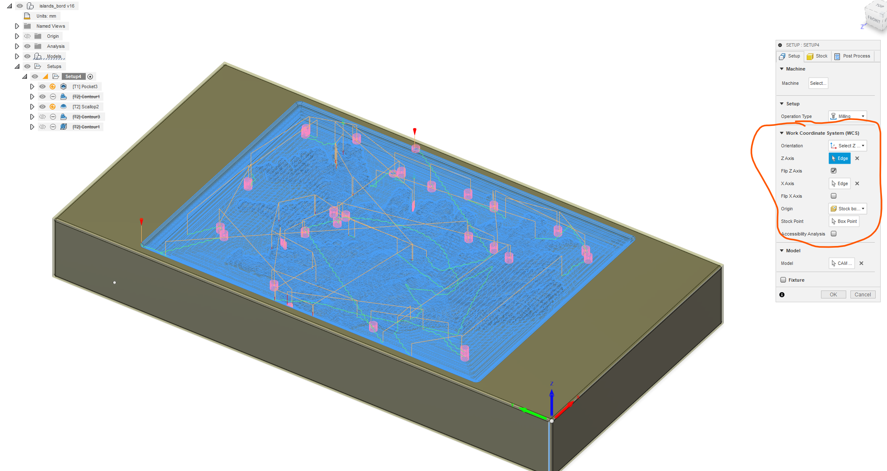

CNC cutting topographic map of iceland on to a tabletop
I´m sorry but this one is in Icelandic...
Þessi síða sýnir mitt framlag í verkefni sem ég vann með Birki Erni Erlendssyni, Kristófer Leví Sigtryggssyni og Þorbirni Braga Jónssyni og er er lokaverkefni í áfanganum Tölvustudd framleiðsla, VÉL608G. Það sem við ákváðum að gera var að gera borð með Íslandi fræstu út í borðplötunni.
Birkir og Þorbjörn sáu um að útvega kort af íslandi á STL formati og einfalda möskvann. Sjá Þorbjörn´s website og Birkir´s website. Í framhaldi af því tók ég við skránni og kom á form sem hægt væri að fræsa út.
Til að tryggja að hægt yfirborðið undir íslandi væri slétt var mesh skráin flutt úr Fusion yfir í Soldiworks þar sem Soldiworks bíður upp á einfaldari möguleika til að skera búta af mesh hlutum. Í Solidworks gat ég teiknað línu meðfram hliðinni á yfirborðinu og splittað hlutnum í tvennt eftir línunni. Til að finna split aðgerðina notaði ég leitargluggan efst í hægra horninu á Solidworks. Sjá mynd hér fyrir neðan.
 Þegar búið var að skera
neðan af landinu var það flutt yfir í Fusion sem stp skrá. Til að flytja það úr Solidworks sem stl skrá þarf að fylgja þessum leiðbeiningum:
STL Export options.
Þegar búið var að skera
neðan af landinu var það flutt yfir í Fusion sem stp skrá. Til að flytja það úr Solidworks sem stl skrá þarf að fylgja þessum leiðbeiningum:
STL Export options.
Til að koma í veg fyrir vesen við gerð skurðarferla fyrir borðið var kassi útbúinn utan um landið þar sem það var staðsett þannig að sjórinn væri 30 mm neðan við borðbrún plötunnar. Jafnframt var landið staðsett í miðju borðplötunnar. Til að byrja með þurfti að import-a stp skránni sem fékkst úr Solidworks af landinu. Það var gert með því að fara í mesh => Insert mesh. Sjá mynd fyrir neðan.

Ég fylgdi leiðbeiningum í þessum link til þess: How to move an object to the origin in Fusion 360.
Þegar það var búið var landið mælt og mældist það rúmir 3 metrar í Fusion 360. Til að átta mig á stærðarhlutföllum teiknaði ég upp kassa með sömu stærðarhlutföll og upprunalega borðplatan en hún mældist 70x40 cm. Út frá þeirri teikningu gat ég áttað mig á hversu mikið þyrfti að skala landið niður. Til þess valdi ég Modify => Scale undir Solid flipanum í Fusion 360. Þar þurfti ég að setja inn hlutfall af upprunalegri stærð landsins. Til að ákvarða hlutfall prófaði ég mig áfram þangað til að landið passaði innan borðplötunnar, sjá mynd fyrir neðan.

Þegar búið var að ákvarða heppilega skölun á landinu var hægt að gera borðplötuna þrívíða. Það er gert með því að velja Extrude. Fyrst byrjaði ég að extrued-a allt miðja plötuna alla þ.a. sjórinn á mesh skránni væri falinn. Þegar það var búið voru barmarnir á landinu extrude-aðir upp um 30 mm. Að lokum var botn borðplötunnar extrude-aður þ.a. borðplatan næði 87 mm þykkt. Þegar því var lokið voru allri kanntar rúnaðir með 3 mm fillet. Sjá mynd fyrir neðan.


Eins og sést stóð möskvinn sem landið tilheyrði út úr plötunni. Til að leysa það var útbúið plan á þeirri hlið eins og sjá má hér fyrir neðan:

Síðan var skorið af möskvanum eftir planinu með því fara í Mesh => Plane cut. Sjá mynd fyrir neðan:

Þorbjörn sýndi mér hvernig átti að útbúa skurðarferla þar sem hann gerði einn slíkan til að prófa hvort hægt væri að fræsa út landið en sá ég um að gera loka ferlana á borðplötu líkaninu. Í framhaldi af því horði ég á myndböndin sem fablab á Akureyri gerði:
Áður en hægt var að útbúa skurðarferlana sjálfa þurfti að skilgreina það svæði sem fræsa ætti úr en það var gert með því að fara í setup. Þar þurfti að staðsetja hnitakerið sem fræsirinn átti að vinna eftir í fyrsta flipanum en í flipa númer tvö þurfti að velja þá hluti sem fræsa ætti í. Mælt er með því að fylgja myndböndunum hér fyrir ofan nákvæmlega við þetta skref. Sjá mynd fyrir neðan af setup-i.
Til að tryggja að framleiðslan tæki ekki óheyrulega langan voru útbúnir tveir skurðarferlar. Annarsvegar einn grófur þar sem 10 mm flatur bor með þremur flautum var notaður sem að var ætlaður til að fræsa út Ísland gróflega. Síðan einn fínan sem var útbúinn með 6 mm flötum bor með 2 flautum til að hafa yfirborðsáferðina af landinu sléttari. Fyrst var prófað að nota adaptive clearing til að útbúa grófa skurðarferilinn. Tölvan brást ekki vel við því þar sem hún reyndi að útbúa skurðarferil í rúman sólarhring þangað til að skráin sem Fusion 360 útbjó skurðarferilinn var orðin rúm 100 GB og búin að fylla tölvuna. Prófað var að hreinsa cache í Fusion 360 með How to clear local user cache in Fusion 360. Það virkaði einungis til að hreinsa pláss á tölvunni en ekki reyndist hægt að útbúa skurðarferilinn að nýju með adaptive clearing. Í stað þess var Pocket clearing notað og tók gerð skurðarferlils ekki nema 5 mínútur með þeirri aðferð. Mynd fyrir neðan sýnir hvar skurðarferlar eru valdir:

Ferilið til að setja upp skurðarferil var svipað með alla skurðarferlana. Ferlið fyrir pocket clearing má sjá á myndunum fyrir neðan og var þannig að fyrst þurfti að setja inn stillingar fyrir bor. Þar þurfti að velja bor, haka við að það væri enginn kælimiðill, setja snúningshraða sem 12500 rpm og Cutting Feedrate sem 4000 mm/min. Í næsta flipa þurfti að velja þau mörk sem fræsirinn átti að vinna fyrir innan. Þar var valin holan í borðplötunni þar sem Ísland var niðurfellt. Þegar það var komið þurfti að breyta clearance heigth og retrackt height í flipa 3 og í flipa 4 þurfti að velja maximum roughing stepdown sem helminginn af þvermáli bitans sem nota átti, hér 5 mm en það er lengdin sem bitinn fer niður um þrep.


Fíni skurðarferillinn var hugsaður til að laga yfirborðsáferð landsins og til að útbúa smáatriði. Byrjað var að prófa að útbúa pararell skurðarferil en með honum komu kantarnir undarlega út. Sjá mynd fyrir neðan:
 Eins og sjá má voru kantarnir ekkert sérstaklega sléttir. Því var farið að skoða aðrar skurðaraðferðir og leit
Contour aðferðin vel út með skemmtilegum stöllum
sem mynduðu einskonar hæðarlínur í landið. Hinsvegar skildi Contour aðferðin eftir efni á stöðum sem voru mjög sléttir. Sjá mynd fyrir neðan.
Eins og sjá má voru kantarnir ekkert sérstaklega sléttir. Því var farið að skoða aðrar skurðaraðferðir og leit
Contour aðferðin vel út með skemmtilegum stöllum
sem mynduðu einskonar hæðarlínur í landið. Hinsvegar skildi Contour aðferðin eftir efni á stöðum sem voru mjög sléttir. Sjá mynd fyrir neðan.
 Lausna var leitað á netinu og að lokum fannst vandamálið í þræði á Autodesk síðunni:
Contour toolpath missing spots.
Þar kom í ljós að Contour aðferðin væri bara til að fræsa út hallandis svæði og sleppti sú aðferð sléttum svæðum. Þá kom einnig fram það að
Scallop aðferðin betur þar sem hún var svipuð og Contour nema það að hún
tæki slétt svæði líka. Prófað var að útbúa skuraðrferil með þeirri aðferð og má sjá niðurstöðuna úr því hér fyrir neðan:
Lausna var leitað á netinu og að lokum fannst vandamálið í þræði á Autodesk síðunni:
Contour toolpath missing spots.
Þar kom í ljós að Contour aðferðin væri bara til að fræsa út hallandis svæði og sleppti sú aðferð sléttum svæðum. Þá kom einnig fram það að
Scallop aðferðin betur þar sem hún var svipuð og Contour nema það að hún
tæki slétt svæði líka. Prófað var að útbúa skuraðrferil með þeirri aðferð og má sjá niðurstöðuna úr því hér fyrir neðan:
Taflan hér fyrir neðan sýnir mitt vinnuframlag til verkefnisins í klukkutímum.
| Verþáttur | Lýsing | Tími |
|---|---|---|
| Líkan í Fusion 360 | Tími sem tók að útbúa líkan af borðplötunni í Fusion 360 | 4 klst |
| Uppsetning skurðarferla | Tími sem tók að setja upp skurðarferla | 3 klst |
| Keyrsla á skurðarferlum | Vinnslutími tölvu við gerð skurðarferla | 32 klst |
| Fræsing | Sitja yfir fræsinum | 4 klst |
| Olíuburður | Olíubera borðplötuna | 1 klst |
| Skrásetning á verkefninu | Skrásetja verkefnið | 8 klst |
| 20 + (32) klst | ||
Copyright (C) 2023 Aron Dagur Beck, Birkir Örn Erlendsson, Kristófer Leví Sigtryggsson, Þorbjörn Bragi Jónsson
Permission is hereby granted, free of charge, to any person obtaining a copy of this Product and associated documentation files , to deal in the Product files without restriction, including without limitation the rights to use, copy, modify, merge, publish, distribute, sublicense, and/or sell copies of the Software, and to permit persons to whom the Software is furnished to do so, subject to the following conditions: The above copyright notice and this permission notice shall be included in all copies or substantial portions of the Product.
THE PRODUCT IS PROVIDED “AS IS”, WITHOUT WARRANTY OF ANY KIND, EXPRESS OR IMPLIED, INCLUDING BUT NOT LIMITED TO THE WARRANTIES OF MERCHANTABILITY, FITNESS FOR A PARTICULAR PURPOSE AND NONINFRINGEMENT. IN NO EVENT SHALL THE AUTHORS OR COPYRIGHT HOLDERS BE LIABLE FOR ANY CLAIM, DAMAGES OR OTHER LIABILITY, WHETHER IN AN ACTION OF CONTRACT, TORT OR OTHERWISE, ARISING FROM, OUT OF OR IN CONNECTION WITH THE PRODUCT OR THE USE OR OTHER DEALINGS WITH THE PRODUCT.
CNC cutting topographic map of iceland on to a tabletop

My contribution to the final project
You can contact me by using email or by phone.